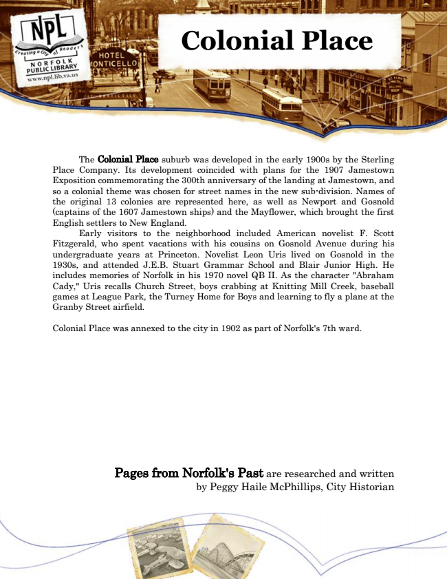

Colonial Place
The Colonial Place suburb was developed in the early 1900s by the Sterling Place Company. Its development coincided with plans for the 1907 Jamestown Exposition commemorating the 300th anniversary of the landing at Jamestown, and so a colonial theme was chosen for street names in the new sub-division. Names of the original 13 colonies are represented here, as well as Newport and Gosnold (captains of the 1607 Jamestown ships) and the Mayflower, which brought the first English settlers to New England.
Early visitors to the neighborhood included American novelist F. Scott Fitzgerald, who spent vacations with his cousins on Gosnold Avenue during his undergraduate years at Princeton. Novelist Leon Uris lived on Gosnold in the 1930s, and attended J.E.B. Stuart Grammar School and Blair Junior High. He includes memories of Norfolk in his 1970 novel QB II. As the character "Abraham Cady," Uris recalls Church Street, boys crabbing at Knitting Mill Creek, baseball games at League Park, the Turney Home for Boys and learning to fly a plane at the Granby Street airfield.
Colonial Place was annexed to the city in 1902 as part of Norfolk's 7th ward.
Pages from Norfolk's Past are researched and written by Peggy Haile McPhillips, City Historian